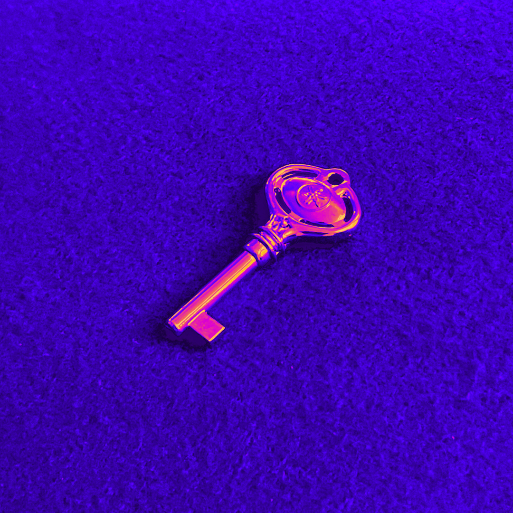

Recordings
Music

Phototropisme
Debut release
EP
Phototropisme
Phototropism is defined as the directional growth of an organism in response to a light stimulus, commonly observed in plants and fungi, where shoots bend towards light and roots grow away from it.
- 1Cartes du ciel3:18
- 2Élégie (pour l’espoir)2:43
- 3Les lacs2:05
- 4Les vairons2:04
Demos
Four

One More Before Bed, Okay?
Apr 2025

Beyond the Sky
Jan 2025

Sandstone
Apr 2024

Wrens
Jan 2024